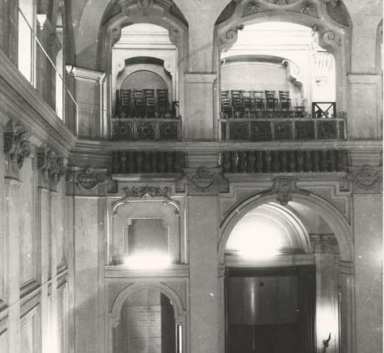
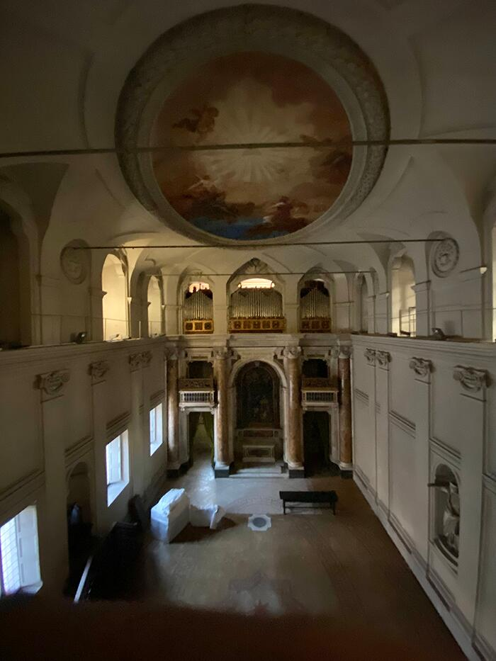
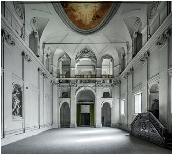
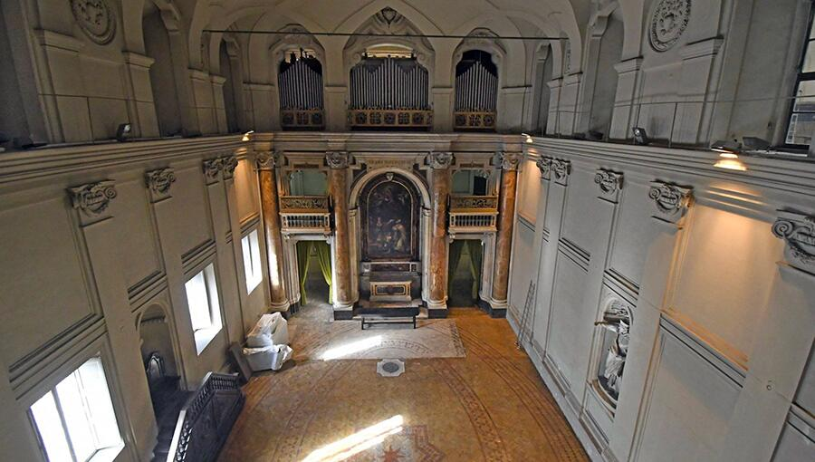
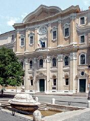
All’Oratorio dei Filippini Borromini elabora una delle più intelligenti e radicali concezioni barocche della luce come struttura percettiva. L’aula dell’oratorio non è definita soltanto dalla sua geometria sinuosa, ma dal modo in cui la luce entra, si frange, si riflette e si diffonde, costruendo un’atmosfera di raccoglimento collettivo. Le aperture non sono mai dirette: sono incassate, filtrate, orientate attraverso spessori murari che agiscono come camere ottiche. È la luce, più della forma, a generare la profondità e la vibrazione del volume.
La brillantezza laterale — mai abbagliante, sempre mediata — produce un campo uniforme ma dinamico, in cui la percezione si concentra sul comportamento del muro: lo spessore diventa materia viva, risonante, capace di manifestare la propria presenza attraverso il modo in cui assorbe o riflette la luce. L’atmosfera è un risultato composito: un equilibrio tra direzione luminosa, densità muraria e tonalità calda dei materiali.
Questa strategia rende l’Oratorio un caso esemplare per l'argomento trattato in questa Scheda: non è la luce che “illustra” la forma, è la forma che nasce dal modo in cui la luce la attraversa. Borromini anticipa una concezione pienamente moderna dello spazio come fenomeno, non come figura: l’architettura accade nella variazione luminosa, nel ritmo delle superfici, nel gradiente che accompagna il corpo mentre si muove.
La luce diventa così la vera struttura percettiva dell’oratorio: silenziosa, disciplinata, determinante.
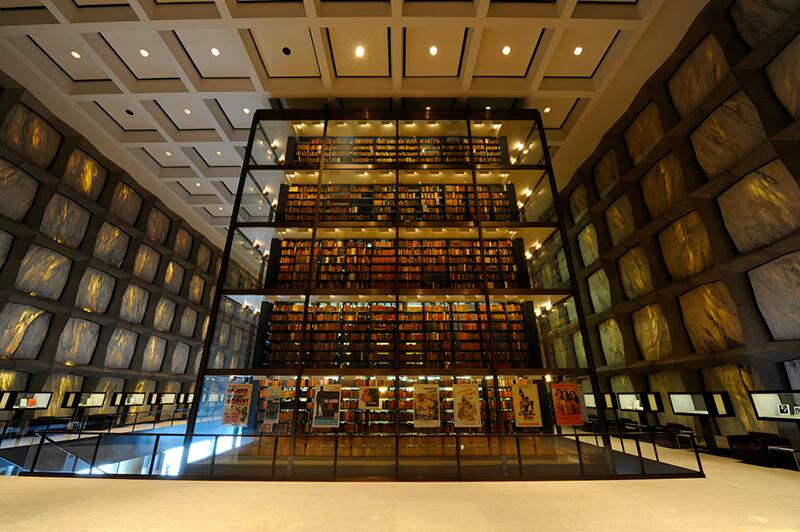
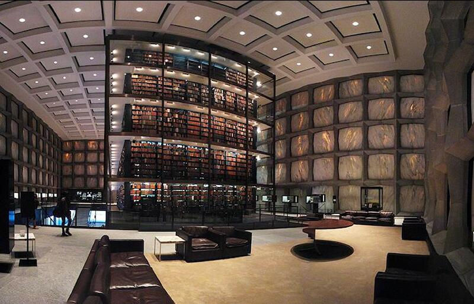
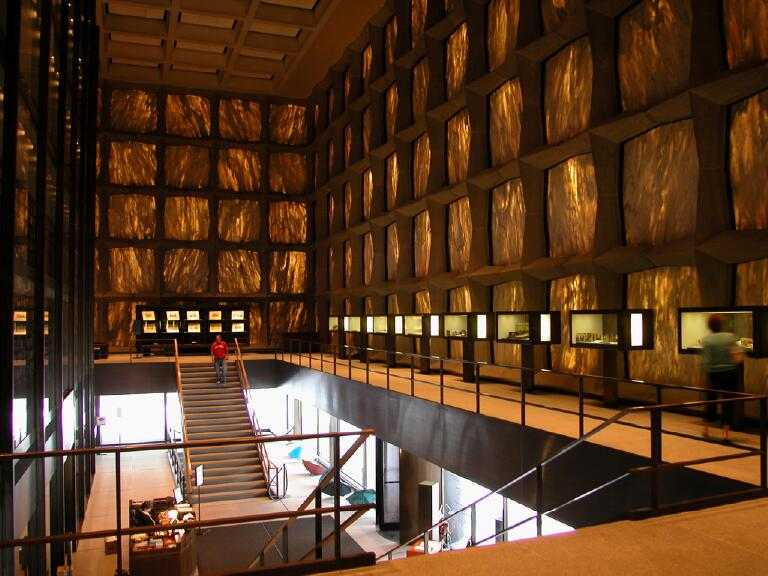
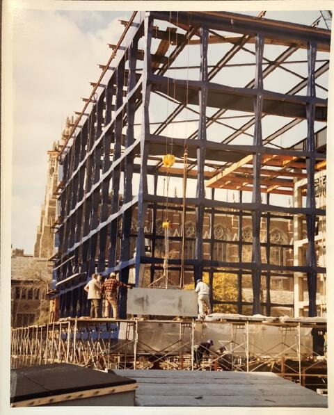
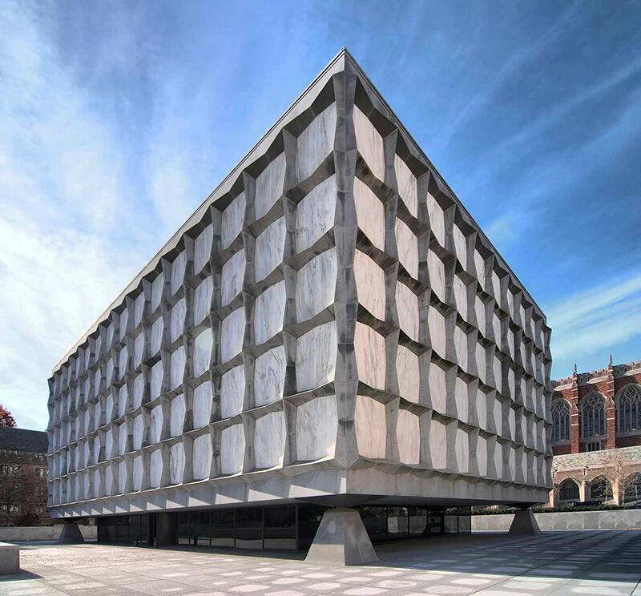
La Beinecke Rare Book & Manuscript Library di Gordon Bunshaft è uno dei più radicali esercizi moderni sulla luce come struttura percettiva. L’edificio rinuncia quasi del tutto alle aperture convenzionali e mette in scena un dispositivo unico: un involucro costituito da pannelli di marmo traslucido del Vermont dello spessore di pochi centimetri, sostenuti da una griglia di travertino e acciaio. In controluce, il marmo diventa una membrana porosa e vibrante che diffonde una luce lattiginosa e costante, simile a un cielo coperto, abolendo il contrasto tra ombra e abbagliamento.
Questa scelta non risponde a un semplice effetto atmosferico, ma a una necessità critica: proteggere i manoscritti dalla luce diretta e al tempo stesso costruire uno spazio percettivo unitario, in cui la profondità e l'orientamento derivano dalla qualità luminosa più che dalla geometria. La sala centrale, con la torre vetrata dei libri sospesa nello spazio, emerge come un corpo luminoso interno: un secondo livello di luce, artificiale e calibrata, che si sovrappone alla penombra omogenea dell’involucro.
In questo senso, la Beinecke è un manifesto della luce come materia costruttiva: Bunshaft non illumina un volume, ma costruisce un campo attraverso cui la luce determina ritmo, densità e temperatura percettiva dello spazio. L’edificio funziona come un gigantesco diaframma fotografico: l’involucro filtra, modula, attenua, mentre l’interno organizza la percezione in un equilibrio tra visibilità e protezione. La luce diventa così la vera struttura dell’architettura, quell’elemento che unifica tutte le parti e fa dell’edificio un’esperienza precisa, stabile e fuori dal tempo.
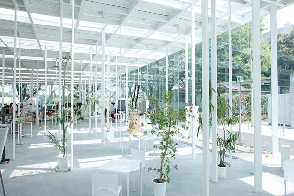
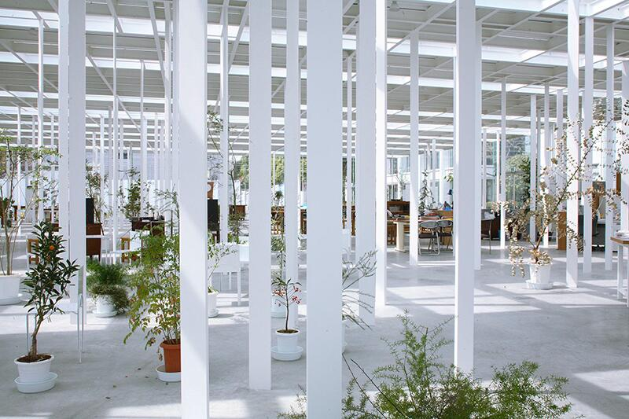
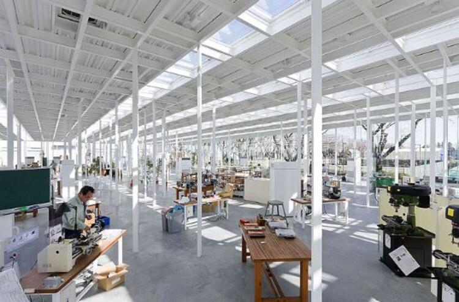
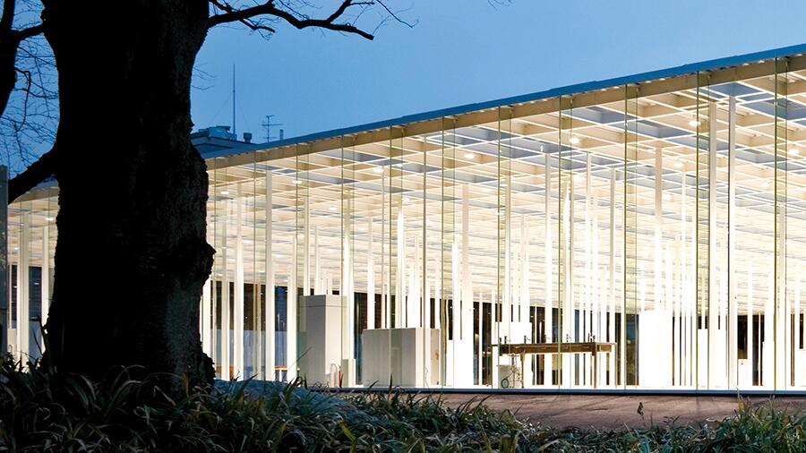
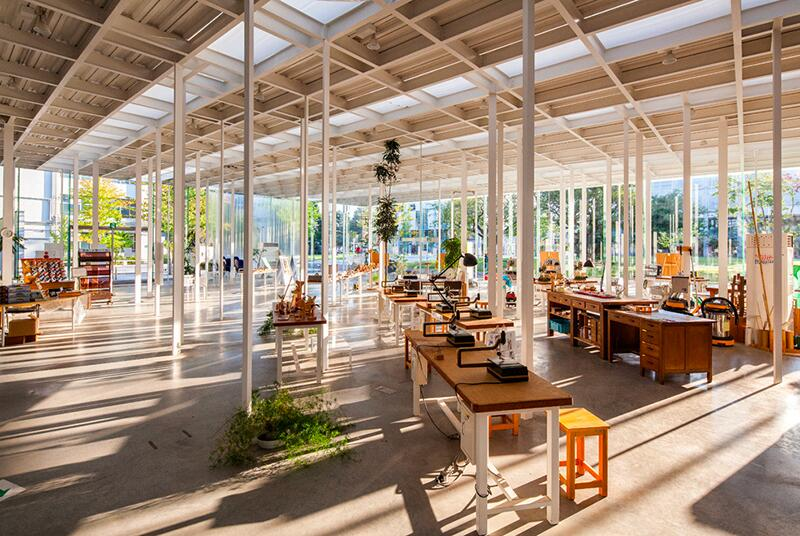
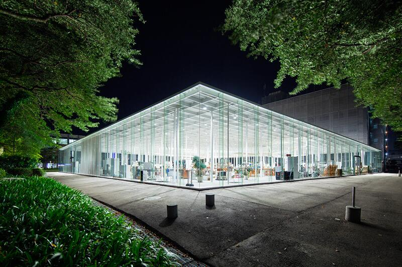
Il KAIT Workshop di Junya Ishigami rappresenta una delle esplorazioni più radicali della luce come struttura percettiva. A differenza dei progetti in cui la luce è direzionata, incisa o modulata da superfici controllate, qui la luce diventa un campo omogeneo, quasi atmosferico, che permea lo spazio senza un orientamento dominante. L’edificio è una grande scatola trasparente, ma la sua identità non deriva dalle facciate: nasce invece dalla fittissima costellazione di 305 colonne sottilissime, tutte diverse per posizione, direzione e funzione spaziale.
In questo contesto, la luce non illumina genericamente: rivela le micro-variazioni del campo strutturale. L’isotropia luminosa — ottenuta grazie a un involucro trasparente e a una pelle diffondente che filtra la radiazione solare — trasforma l’interno in un ambiente privo di punti focali, in cui ogni colonna emerge come segno autonomo e, allo stesso tempo, parte di una trama più vasta.
È la luce che rende leggibile questa porosità, mostrando come densità e rarefazioni del sistema strutturale coincidano con modalità diverse di uso e attraversamento. Non esistono corridoi, aule o limiti definiti: lo spazio si configura come un gradiente continuo, percepibile solo camminando, osservando come la luce “tocca” le colonne, le devia, le assottiglia o le intensifica.
Ishigami dimostra così che la luce può essere un dispositivo non narrativo ma strutturale, capace di sostituirsi alla geometria come principio organizzatore. Nel KAIT Workshop lo spazio è una condizione atmosferica prima che architettonica: un campo luminoso dentro cui il corpo si orienta non tramite pareti, ma attraverso la vibrazione tra luce, materia e dettaglio costruttivo.